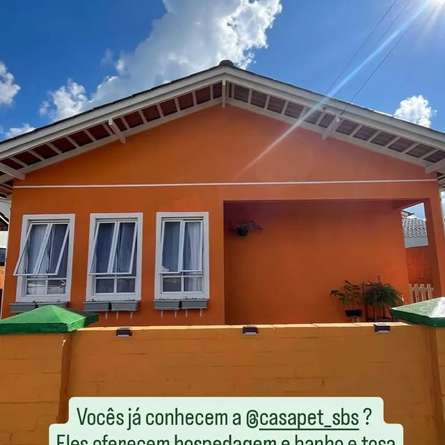
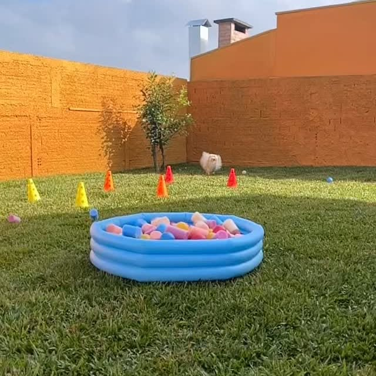
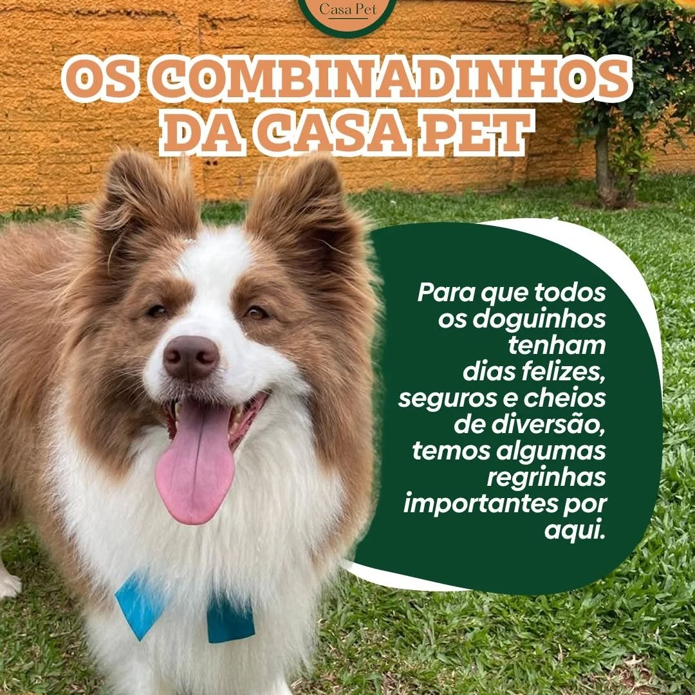
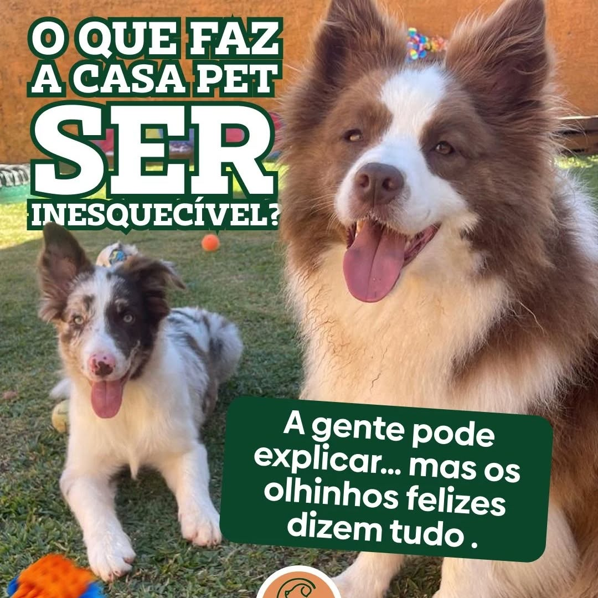

Hospedagem afetiva, day care e pet sitter
Endereco
Rua Eugenio Gaertner, 101
Cidade
Sao Bento do Sul, SC
Clima da marca
Casinha laranja, afeto e rotina
Casa Pet SBS
Hospedagem afetiva, creche e cuidado pensado para que seu pet se sinta em casa.
Inspirada na identidade real do @casapet_sbs: casinha laranja, quintal, rotina acolhedora e uma linguagem visual premium sem cara de pet shop generico.

Casa laranja
Hotel boutique com cara de lar

Casa Pet SBS
Hospedagem afetiva para pets que gostam de rotina, cuidado e quintal.
Diferenciais
Uma experiencia premium, acolhedora e organizada do primeiro contato ao retorno.
A Casa Pet SBS comunica e entrega o que promete: segunda casa, afeto real e um ambiente pensado para que o tutor confie e o pet relaxe.
Supervisao
Rotina acompanhada com atencao constante, leitura de comportamento e cuidado atento em cada periodo do dia.
Rotina afetiva
Cada hospede e tratado como familia, com acolhimento, previsao de rotina e um ritmo que transmite seguranca.
Espaco pensado para caes
Casinha, quintal e areas de convivio inspiradas na presenca real da marca: calor, liberdade e conforto visual.
Contato facilitado
Agendamento simples, orientacoes claras antes da hospedagem e um atendimento que passa tranquilidade para o tutor.
Galeria premium
Layout editorial inspirado no feed real da Casa Pet SBS.
Uma leitura visual baseada na casinha laranja, nas areas de hospedagem e no tom afetivo que a marca sustenta no Instagram.
A fachada laranja virou assinatura visual da marca.
Quintal, brinquedos e rotina com liberdade supervisionada.

Organizacao clara para dias felizes, seguros e leves.
Orientacao pratica para o pet chegar confortavel e seguro.
Uma narrativa de afeto que foge da estetica infantil e generica.

Olhares tranquilos e energia leve dizem tudo sobre a experiencia.
Afeto, movimento e um ambiente feito para convivencia real.
Como funciona
Uma jornada organizada para o tutor e acolhedora para o pet.
O processo transmite profissionalismo sem perder a linguagem de casa: simples, transparente e emocionalmente seguro.
Reserva
Conversa inicial pelo WhatsApp, alinhamento da necessidade e orientacoes para a visita ou hospedagem.
Recepcao
Chegada com acolhimento, leitura do perfil do pet e entrada no ritmo da casa com seguranca.
Hospedagem
Rotina de convivencia, descanso, supervisao e espaco pensado para que ele se sinta bem de verdade.
Retorno
Saida tranquila, comunicacao clara com o tutor e a sensacao de que o pet foi cuidado em um lar.
Depoimentos
Percepcao premium nasce quando o cuidado e sentido, nao apenas prometido.
O tom da Casa Pet SBS e emocional, calmo e sofisticado. Os depoimentos abaixo seguem essa mesma linha de experiencia.
"A Casa Pet passa a sensacao de segunda casa desde a primeira visita. O ambiente acolhe e isso muda completamente nossa confianca."
Mariana, tutora da Luna
Hospedagem afetiva
"Nao parece um hotel comum. E bonito, organizado e ao mesmo tempo muito humano. O nosso cachorro voltou leve e tranquilo."
Lucas, tutor do Bento
Creche e day care
"O cuidado tem identidade. Tudo conversa: a casinha, o quintal, a rotina e a forma como tratam cada pet como familia."
Aline, tutora da Frida
Hospedagem e pet sitter
Agendar visita
Seu pet merece se sentir em casa mesmo quando esta longe.
Uma proposta de hospedagem afetiva, creche e pet sitter com identidade propria, visual premium e uma experiencia acolhedora em cada detalhe.